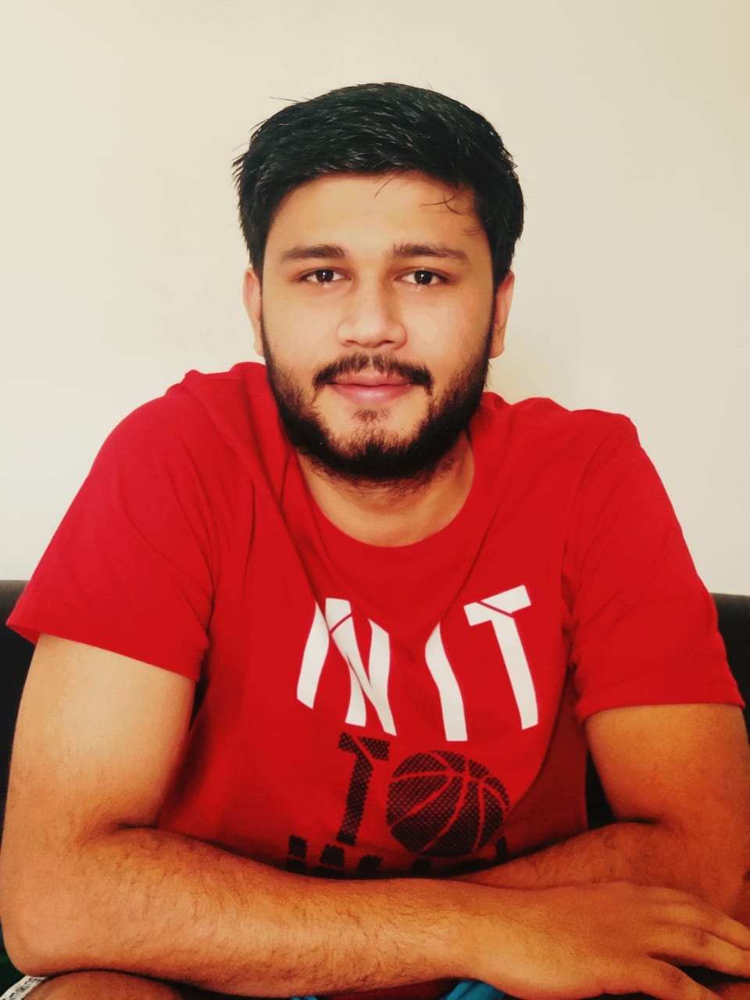

“Torture the data, and it will confess to anything.”
Hi, I am Manish, currently in my final year of my bachelor's at Army Institute of Technology.
My discipline of study is Computer and Information Technology.I am currently working on Deep Learning.
I am an outgoing and energetic young professional, seeking a career that fits my professional skills and personality.
- Education
-
B.E.(Information Technology) Army Institute of Technology Pune,India.
Freshman: 8.72/10
Sophomore: 8.68/10
Junior: 8.26/10
- Skills
-
Programming Languages
C | C++ | PYTHON | HTML | CSS | PHP | MYSQL.
Other Computer skills
Deep Learning, Machine Learning, Data Science, Data Munging.
- Projects
-
Detection of leaves disease using CNN. Mar, 2018-
- This is a project that i am currenty working on. The Aim of this project is to apply Deep-Learning (CNN) on the
leaves images and predict the disease .
- Project Plant Village Inspired me to work on this domain.
ChatBOT Mar-Apr, 2018
- Developed a ChatBot for Freshman admission Query for my college. Developed on dialogflow.com .
- Check Out here.
Titanic survival Prediction Aug, 2017
- As a part of kaggle competition, i solve this problem statement.
- Used random forest classifier .
- Accuracy: 0.81
- Email for more info.
Smart Electricity Meters Apr-July, 2017
- We designed a system that was supposed to send data of a electricity meter to AWS cloud when connected with a Raspberry Pi in real time.
- The Main purpose behind this was to stop electricity theft in indian cities.
- Our Project was awarded as Best Student Project By Computer Society Of India (Formed in 1964/65 at DRDO).
- Email for more info.
Navigation System Using Optical Flow Detection Technique for Visually Impaired Jan-Mar, 2017
- A Research Grant of 85,000 inr was given by BCUD Pune University to our guide Dr. (Mrs) Sangeeta Jadhav. and Assistant Professor
Rupali Bagate.
- Shi-Tomasi corner detection algorithm and Lucas-Kanade optical flow algorithm were used to detect approaching obstacle.
- For objects in close vicinity SR04 sensor was used , as accuracy of camera was very less in this case.
- Email for more info.
Ganga Water Quality Monitoring(IOT based) aug-Oct, 2016
- A real time working water quality monitoring system was designed with the help of Raspberry PI and MLAB online mongodb database
- This system was able to send email when the pollution level crosses threshold.
- Google Map APIs were used to plot the status of every node in real time.
- Email for more info.
- Hacks
-
Departmental Website
- Designed a website of my department, Information Technology.
- This Helped student and faculty to share study material and notes.
OutPass Management System
- A web application to manage the outpass system in my college. Helped in fast outpass issuing and saves paper.
- Hobbies and Interests
- Crossword puzzles, chess, reading/solving coding Issues,
- Scholastic Achievements
- Best Technical Performer for year 2017-2018.
- Received a Research Grant of 85000 inr by BCUD Pune University.
- Winner at CSI for best student project competition.
- Winner of Transform India organized in Solutions’18.
- Awarded with Prime minister Scholarship for all three academic years.
Go Green ,
Save Water ,
Do not burn plastic.